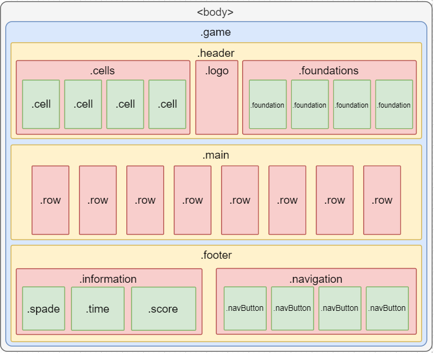
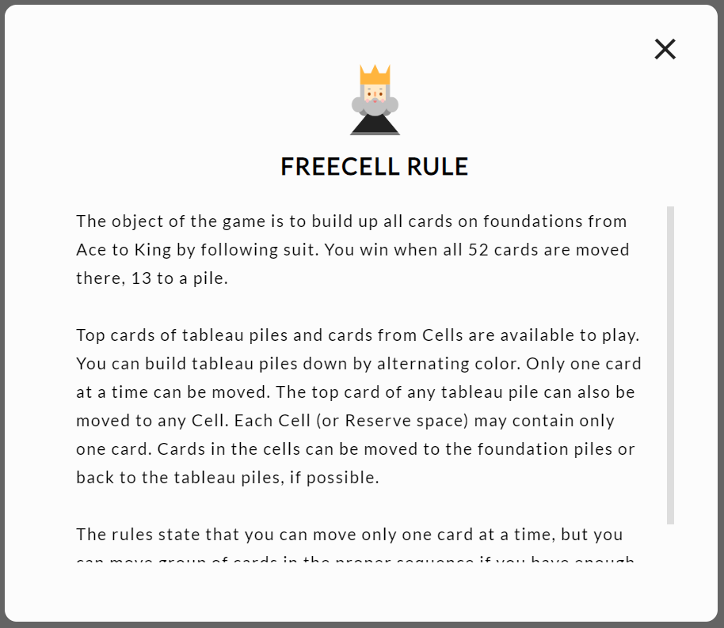

本作品更新的進度到能夠進行基本遊戲，但有部分邏輯上的 bug ，且暫無拖曳動畫。
Lynn 的 F2E 2nd 作品列表 / 第二關：新接龍
採用Daphne 的設計稿 。
由於這次的題目是新接龍，排版比較單純，所以先一鼓作氣把 HTML 、 CSS 寫好！
網頁分為主要遊戲畫面和四個提示視窗（獲勝、失敗、重新開始和規則說明）。
結構大致如下：

相較於番茄鐘，新接龍的樣式設定也比較單純，全部使用 flexbox 、 jcc 就幾乎沒有問題了。
提示視窗的排版大同小異，只有按鈕數量不同，以及 .rule 的文字區塊需要顯示卷軸。
獲勝、失敗和重新開始的差別只有按鈕不同。
規則說明的文字區塊需要修改卷軸樣式，搜尋到一篇可以參考的文章：CSS3自定义滚动条样式 。

為了讓卡片的元素可以利用迴圈放入畫面中，需要先將卡片的基本資料產生在陣列中。
1 2 3 4 5 6 7 8 9 10 11 12 13 14 15 16 17 function initialize ( const suit = ['s' , 'h' , 'd' , 'c' ]; let result = []; for (let i = 0 ; i < 4 ; i++) { for (let j = 1 ; j <= 13 ; j++) { let obj = { id : suit[i] + j, number : j, suit : suit[i], color : ((suit[i] == 's' || suit[i] == 'c' ) ? 'black' : 'red' ), } result.push (obj); } } return result; }
cardsList 是一個含有 13 個陣列的二維陣列，第 0 個子陣列是 cell 、 1~8 是主要牌區，而 9~12 是 foundation 。
1 2 3 4 5 6 7 8 9 10 11 12 13 14 let cardsList;function shuffle ( let result = [[], [], [], [], [], [], [], [], [], [], [], [], []]; let initial = initialize ().concat (); while (initial.length > 0 ) { for (let i = 1 ; i <= 8 && initial.length > 0 ; i++) { result[i].push (initial.splice (Math .floor (Math .random () * 1000 ) % initial.length , 1 )[0 ]); } } return result; }
開啟新局時，需要重新計時、分數歸零、重新發牌並記錄發牌的結果，以供 RESTART 使用。
1 2 3 4 5 6 7 8 9 10 11 12 13 14 15 16 17 18 19 20 21 22 23 24 25 26 27 28 29 30 31 32 33 34 35 36 37 38 39 40 41 42 43 let main = document .querySelector ('.main' );let rows = document .querySelectorAll ('.main .row' );let cells = document .querySelectorAll ('.cell' );let foundations = document .querySelectorAll ('.foundation' );function newGame ( timeId = timer (); score = 0 ; cardsList = shuffle (); origin = cardsList.concat (); for (let i = 0 ; i < 4 ; i++) { cells[i].innerHTML = '' ; foundations[i].innerHTML = '' ; if (i < cardsList[0 ].length ) { cells[i].innerHTML = cardsList[0 ][i]; } for (let j = 0 ; j < cardsList[i + 9 ].length ; j++) { foundations[i].innerHTML += '<div id="' + cardsList[i + 9 ][j].id + '" class="card ' + cardsList[i + 9 ][j].suit + ' ' + cardsList[i + 9 ][j].color + '" draggable="true"></div>' ; } foundations[i].innerHTML += '</div>' ; } for (let i = 1 ; i <= 8 ; i++) { rows[i - 1 ].innerHTML = '<div class="rectangle"></div>' ; let rowLength = cardsList[i].length ; for (let j = 0 ; j < rowLength; j++) { rows[i - 1 ].innerHTML += '<div id="' + cardsList[i][j].id + '" class="card ' + cardsList[i][j].suit + ' ' + cardsList[i][j].color + '" draggable="true"></div>' ; } rows[i - 1 ].innerHTML += '</div>' ; } }
到此為止就有新接龍該有的畫面了：
此遊戲的畫面切換較為簡單，只要將 .game 和所有提示視窗的 display 設為 none，再將想要打開的提示視窗設為 flex （有排版需求）；或是將提示視窗都關掉，打開 .game 即可。
拖曳功能算是這一關核心的挑戰，這個功能改變了我原本的資料結構。
參考文章：[PJCHENder 那些沒告訴你的小細節：筆記] 製作可拖曳的元素（HTML5 Drag and Drop API）
拖曳功能的作法簡單分為「被拖的」跟「被丟的」：
首先要在所有要拖曳的元素上加上「 draggable=“true” 」，於是我的撲克牌元素長成這樣：
1 <div id ="h7" class ="card h red" draggable ="true" > </div >
接著在 CSS 中設定 user-select 為 none ，避免拖曳時選取到元素的內容：
1 2 3 4 5 6 [draggable="true" ] { user-select : none; -moz-user-select : none; -webkit-user-select : none; -ms-user-select : none; }
然後在撲克牌元素上綁定 dragstart 事件，利用 dataTransfer.setData() 丟出需要的資料。
1 2 3 4 5 6 7 let cards = document .querySelectorAll ('.card' );for (let i = 0 ; i < 52 ; i++) { cards[i].addEventListener ('dragstart' , function ( event.dataTransfer .setData ('id' , event.target .id ); event.dataTransfer .setData ('classList' , event.target .classList ); }, false ); }
要被放入元素的容器需要綁定 drop 事件，並用 event.dataTransfer.getData() 取得資料，指定要放入的元素。
另外在放撲克牌到 .foundation 或 .row 時，會有 .card 被放入 .card 的狀況，所以需要先判斷 event.target 是哪個元素，再決定放到哪個容器。
1 2 3 4 5 6 7 8 9 10 11 12 13 14 15 16 17 18 19 20 let foundations = document .querySelectorAll ('.foundation' );for (let i = 0 ; i < 4 ; i++) { foundations[i].addEventListener ('drop' , foundationDropped); foundations[i].addEventListener ('dragenter' , cancelDefault); foundations[i].addEventListener ('dragover' , cancelDefault); } function foundationDropped (event ) { cancelDefault (event); if (event.target .parentElement .className == 'foundations' ) { event.target .appendChild (document .querySelector ('#' + event.dataTransfer .getData ('id' ))); } else { event.target .parentElement .appendChild (document .querySelector ('#' + event.dataTransfer .getData ('id' ))); } } function cancelDefault (event ) { event.preventDefault (); event.stopPropagation (); return false ; }
到此拖曳的功能就完成了：
在拖曳功能毫無限制的狀況下，想怎麼贏就怎麼贏（？）。
這部分如有機會再做更新。